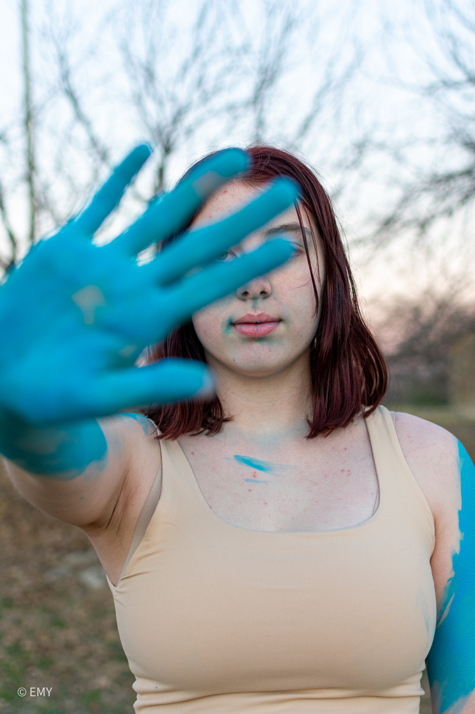
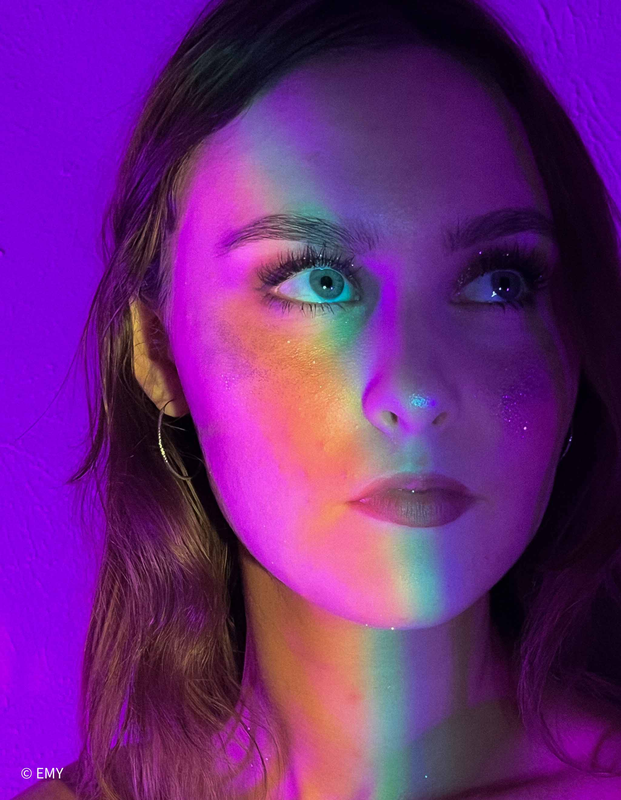

Color Series




I worked with Kaylee Withrow, Mackenzie Estes, Kara Wiley, and Ashley Atkinson on this project.
These pictures are part of an ongoing series that I am calling the Color Series. I wanted to show how the different colors can influence the mood of a picture.
I was the creative mind behind most of these shoots, the photographer, and the editor.
I collaborated with another local photographer named Cassy Kearly for the blue shoot.
June 2022- Present
Each color evoked a different vibe for me which I set out to capture with the subjects outfits, lighting and editing.
There have not been many challenges so far with this series.
I played with different lighting on my most recent shoot of this series and editing was challenging.
When I do the next part of the series, I want to explore more poses.
This is my first series that I am doing from start to finish.
I learned how to edit with lighting that I have not tried before.